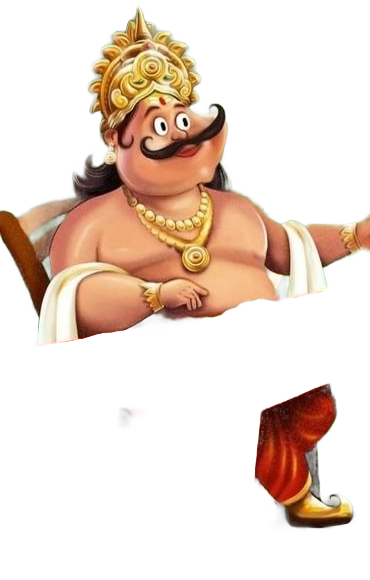
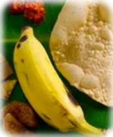
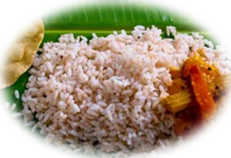
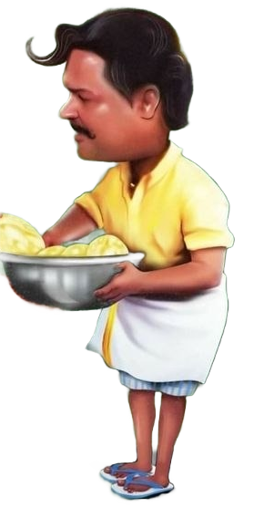

King Mahabali
Mood: Hungry & Eager 😋


"തന്നോടല്ലേ രണ്ടാമത് പപ്പടം ചോദിക്കല്ലേ എന്ന് പറഞ്ഞത്!"
"Thannodalle randaamathu pappadam chodikkallennu paranjathu!"
"Didn't I tell you not to ask for a second pappadam?!"

Ponjikkara Kesavan
ഹെഡ് കാറ്ററർ & ഫിലോസഫർ 🥄